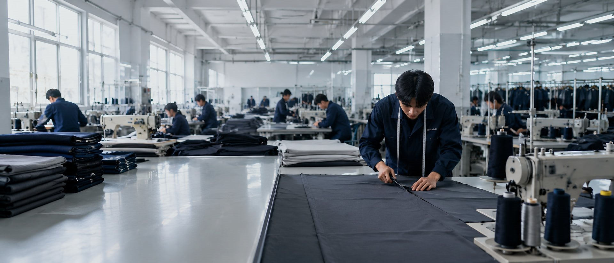

Requirement Review
Review product type, quantity, size chart, functional needs and delivery expectations.
Production setup
From material preparation and sample development to bulk production and final inspection, we support structured manufacturing for workwear, uniforms and functional garments.
Overview
Lingfeng Apparel combines experienced technicians, pattern makers, designers, production staff and quality control processes to support project-based apparel manufacturing.
Our production process covers fabric inspection, material preparation, CAD layout, cutting, sewing, pressing, finishing, inspection and packaging.

Process timeline
Each project moves through clear checkpoints before bulk production and final delivery preparation.
Review product type, quantity, size chart, functional needs and delivery expectations.
Confirm fabric, trims, color, lining, logo method and performance needs.
Prepare patterns according to garment structure and client requirements.
Develop and adjust samples before moving toward bulk production.
Check incoming fabric appearance and preparation status.
Plan layout, spread fabric and complete cutting preparation.
Arrange sewing, assembly and production-stage process checks.
Inspect finished garments, complete pressing, folding, packing and labeling support.
Equipment categories
Equipment categories support pattern layout, fabric handling, garment assembly, finishing, inspection and packing.
Factory strength
With nearly 400 skilled workers, an annual production capacity of 700,000 sets and more than 200 pieces of production equipment, Lingfeng Apparel supports clients who need practical apparel, stable quality and flexible customization.
Fabric inspection, preparation and production planning before cutting.
CAD layout, fabric spreading and cutting checks for bulk production.
Production support for suits, jackets, uniforms, workwear and functional garments.
Pressing, finishing, inspection, folding, labeling and packaging preparation.
Tell us your product type, materials, estimated quantity, size chart and target delivery time.
Request a Quote